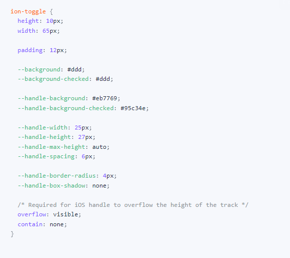

Los toggles son interruptores que cambian el estado de una sola opción. Se pueden encender o apagar presionándolos o deslizándolos. También se pueden verificar mediante
programación configurando la propiedad marcada.
1. USO BÁSICO
Tenemos varios tipos:
->En primer lugar tenemos un "Default Toggle" lo que quiere decir que el toggle está apagado.
->También nos encontramos con la opción "Checked Toggle" que es lo contrario al anterior, el toggle se encuentra encendido.
->Y por último tenemos dos "Disabled" toggles que están desactivados por lo que no es posible su funcionamiento.
En la siguiente imagen se muestra el código para cada uno de los toggles explicados anteriormente.

2. ON/OFF ETIQUETAS
Los toggles pueden habilitar etiquetas de encendido/apagado configurando la propiedad "enableOnOffLabels". Esto es importante para la accesibilidad ya que facilita la
diferenciación entre un toggle marcado y no marcado.
Cuando el toggle se encuentra apagado aparece en forma gris y con "-"; mientras que si lo encendemos ("haciendo click sobre él") se cambia a azul y saldría un "check".
El código
para hacer esto es el siguiente:

3. TEMATIZACIÓN
3.1 Colores
Estos son los colores que podemos poner a nuestro toggle. Cada color tiene un nombre específico que debemos saber:
->El primero que nos encontramos tiene por nombre "primary".
->El segundo, "secondary".
->El tercero, "terciary".
->El cuarto, correspondiente al verde, "success".
->El quinto, amarillo, "warning".
->El sexto, rojo, "danger".
->El séptimo, negro, "dark".
->El octavo, gris, "medium".
->Y por último, "light".
A continuación, se muestra el código para poner color a los toggles mediante la etiqueta "ion-toggle".

3.2. Propiedades personalizadas de CSS
Las propiedades personalizadas de CSS se pueden combinar con CSS estándar para apuntar a diferentes partes de un toggle. Podemos modificar el ancho y la altura del toggle
directamente para cambiar el tamaño de la pista, mientras usamos las propiedades personalizadas "--handle-width" y "-- handle-height" para personalizar el tamaño del
toggle.
En primer lugar tenemos que crearnos el toggle con las siguientes líneas de código:

El código referente a CSS es recomendable hacerlo en una página aparte. A continuación se muestra el código CSS para cambiar la forma y color de los toggles creados:

El resultado final será este:

3.3 Partes de sombras de CSS
Podemos personalizar aún más la alternancia apuntando a partes de sombra específicas que están expuestas. Cualquier propiedad de CSS en estas partes se puede diseñar y
también se pueden combinar con propiedades personalizadas de CSS.
Usamos el mismo código que en el apartado anterior para crear el toggle. Pero en la parte de CSS tiene que aparecer lo siguiente: